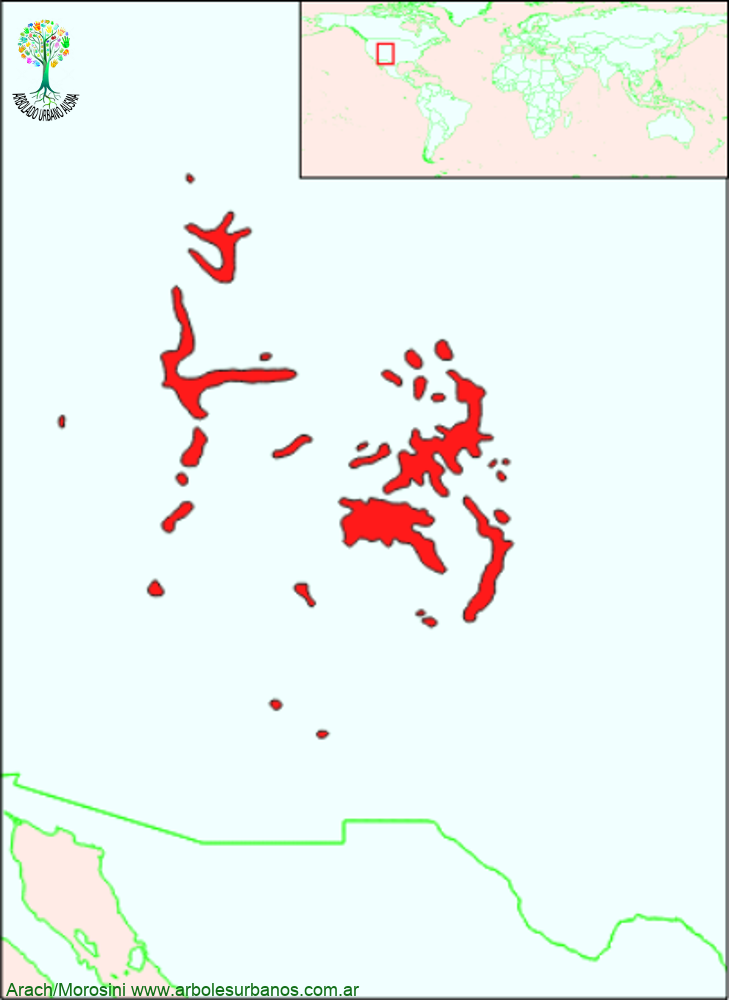

Click en las imágenes para ampliar

{kind=link}
{kind=link}
{kind=link}
{kind=link}
{kind=link}
Picea del Colorado
NOMBRE CIENTÍFICO: Picea pungens
FAMILIA BOTÁNICA: Pináceas
ORIGEN: Es originaria del centro-oeste de los Estados Unidos, en 6 estados desde Idaho al norte hasta Nuevo méxico al sur, con centro en Colorado, de ahí su nombre. Habita sobre las montañas Rocallosas, en las laderas secas y a la vera de arroyos, en altitudes entre 1.800 y 3.000, metros sobre el nivel del mar.
DESCRIPCIÓN GENERAL: Esta conífera alcanza una altura de hasta 35 metros y 1 metro de diámetro en su área de distribución natural. La copa es estrechamente cónica, su corteza es gris que va fragmentándose en placas, cuando el ejemplar envejece. Las ramas crecen en forma de verticilos anuales, cuando jóvenes son de color verde azulado y a medida que va creciendo se tornan naranjas. La disposición de las ramas hace que la copa tenga aspecto estratificado.
HOJAS: Las hojas son acículas lisas y de ápice punzantes, (de ahí el epíteto de pungens) de color verde azulado y persisten en las ramas hasta que crecen. Llegan a tener entre 3 cm y 5 cm de largo.
ESTRÓBILOS: Los masculinos son de color rojizo mientras que las femeninas son de color verde, ambas presentes en el mismo árbol. Los conos son hasta 10 cm. de largo péndulos, de consistencia papirácea, compuestos por escamas seminíferas dentadas y onduladas, de color amarillento.
USOS: Es una especie utilizada principalmente como ornamental, por el color azulado de su follaje. Existen muchas variedades cultivadas como los cultívares »Aurea’, Argentea’, ‘Pendula’ y la denominada ‘Koster’, conocida por su porte estrechamente columnar.
REPRODUCCIÓN: Se reproduce por semillas, algunas variedades se multiplican por injerto.
PARTICULARIDADES: No es exigente e cuestión de suelos, pudiendo crecer en los de tipo pedregoso, arenoso o pobres en materia orgánica. Resiste a la contaminación aunque al igual que la Picea Abies, es susceptible del ataque de hongos, que provoca la pérdida de acículas y el ennegrecimiento de las ramas. Existe una especie muy similar que es la Picea blanca ( Picea glauca ) que es originaria del norte América (ocupando casi todo Canadá y norte de Estados unidos